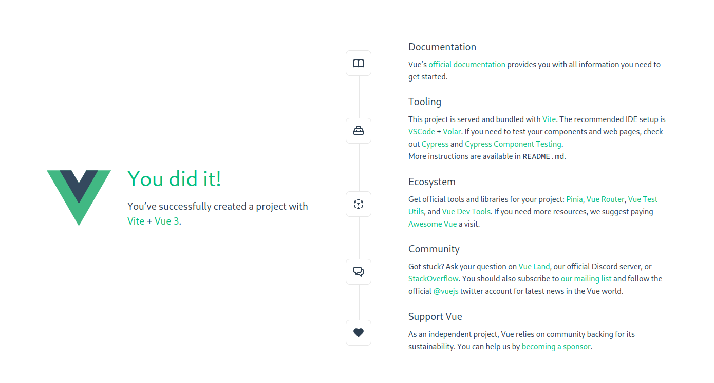
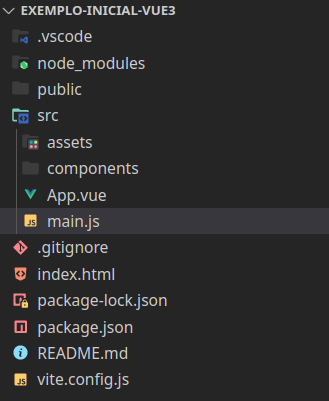
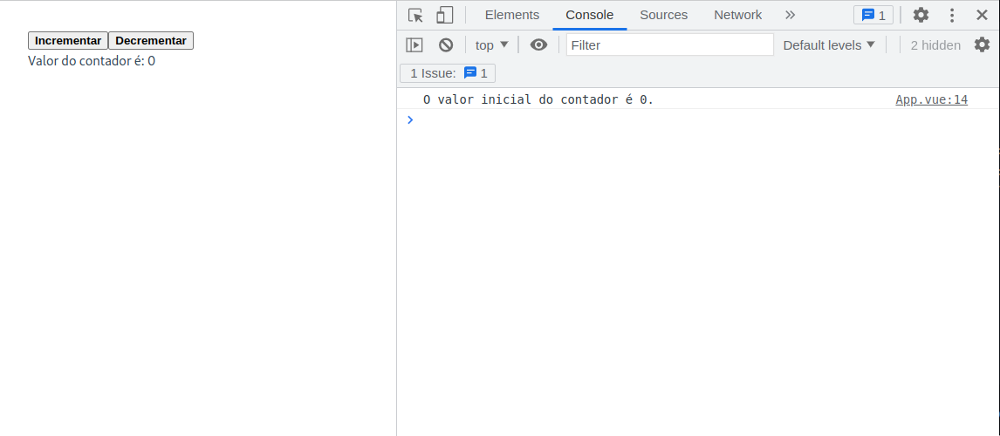

Conhecendo o VueJs¶
O framework VueJs¶
O VueJs (1) é um framework javascript para desenvolvimento de aplicações web. Ele é um framework progressivo, sendo aplicável tanto em aplicações pequenas ou grandes, com ou sem o uso de bibliotecas adicionais. O VueJs é um framework de código aberto, mantido por uma comunidade de desenvolvedores. Ainda, ele provê uma programação reativa, que atualiza automaticamente a interface do usuário quando os dados são alterados. Também, é baseado em componentes, o que permite a criação de componentes reutilizáveis, que aumenta a produtividade do desenvolvedor.
- pronuncia-se /vju:/, como no inglês view
Duas características importantes do VueJs são:
- Renderização declarativa: o VueJs permite a criação de templates HTML que são renderizados dinamicamente com base nos dados da aplicação. Essa renderização é feita de forma declarativa, ou seja, o desenvolvedor declara o que deve ser renderizado, e não como deve ser renderizado. Isso permite que o VueJs faça o trabalho de atualizar a interface do usuário de forma eficiente.
- Programação reativa: o VueJs rastreia automaticamente o estado de cada variável declarada na aplicação, e atualiza a interface do usuário quando os dados são alterados. Isso permite que o desenvolvedor se concentre no desenvolvimento da aplicação, sem se preocupar com a atualização da interface do usuário.
Criação de uma aplicação VueJS¶
Importante
Antes de iniciar a criação da aplicação, é importante que você tenha o NodeJS instalado e configurado em seu ambiente.
- Garantir que os passos da Aula inicial foram executados.
- Crie uma nova pasta para o seu projeto e abra no VSCode.
- Abra a pasta do projeto no vscode (repita em voz alta: "Nunca abra um arquivo, sempre abra a pasta.").
Para criar uma aplicação VueJS, abra o terminal no diretório em que você deseja criar o projeto e execute o comando:
Note que usamos um parâmetro [nome-do-projeto] que é opcional. Se você informar este parâmetro, ele criará um projeto com o nome informado, caso contrário, ele solicitará o nome do projeto.
O comando anterior irá criar uma aplicação VueJS usando uma ferramenta de scaffolding chamada create-vue. Ele apresentará uma série de perguntas para você. Responda conforme a seguir:
-
Project name: informe o nome do projeto. Este nome será usado para criar a pasta do projeto.
-
Select features to include in your project: selecione as funcionalidades que você deseja incluir no projeto. Você pode navegar pelas opções usando as setas do teclado e selecionar/deselecionar as opções usando a barra de espaço. Abaixo, eu deixei um exemplo do que você deve pode escolher nesta etapa inicial do curso.
◆ Select features to include in your project: (↑/↓ to navigate, space to select, a to toggle all, enter to confirm)
│ ◻ TypeScript
│ ◻ JSX Support
│ ◻ Router (SPA development)
│ ◻ Pinia (state management)
│ ◻ Vitest (unit testing)
│ ◻ End-to-End Testing
│ ◼ ESLint (error prevention)
│ ◼ Prettier (code formatting)
- Install Oxlint for faster linting: selecione
Nopara não instalar o Oxlint.
Então ele fará a criação do projeto em uma pasta com o nome do projeto informado.
Note que no exemplo anterior, escolhemos não usar o Vue Router, Pinia, Vitest, Cypress, ESLint e Prettier, bem como o suporte ao TypeScript e JSX. Você pode escolher o que desejar.
Agora, abra no VSCode a pasta do projeto criado. Importante que você abra a pasta do projeto, e não um arquivo específico. Outro ponto importante: caso você tenha executado o comando de criação do projeto já dentro do VS Code, eu sugiro que você reabra na pasta do projeto, pois o VS Code pode não reconhecer o projeto corretamente.
Em seguida, basta executar os seguintes comandos:
O primeiro comando instala as dependências do projeto. O segundo comando executa o servidor de desenvolvimento do VueJS. Em geral, o servidor estará em execução na porta 5173, caso esta esteja livre. Para acessar a aplicação, basta abrir o navegador e acessar a URL http://localhost:5173.
A imagem mostra a tela inicial da aplicação VueJS.

Manter um repositório Git
É muito importante que logo após a criação do projeto você crie um repositório Git para o projeto. Para isso, você pode usar o próprio Visual Studio Code. Para isso, abra o menu Source Control e clique em Initialize Repository. Em seguida, clique em Create Repository. O Visual Studio Code irá criar um repositório Git na pasta do projeto. Isso requer que o usuário tenha o Git instalado e configurado. Para mais informações, consulte a Aula inicial.
Também, é importante que a cada alteração que você fizer no projeto, você faça um commit. Para isso, abra o menu Source Control e clique em Stage All Changes. Em seguida, clique em Commit. O Visual Studio Code irá criar um commit com as alterações realizadas. Para mais informações, consulte a Aula inicial.
Estrutura de arquivos¶
A imagem a seguir mostra a estrutura de arquivos inicial do projeto.

Esta estrutura pode ser resumida da seguinte forma:
node_modules: pasta com as dependências do projeto.public: pasta com os arquivos estáticos da aplicação.src: pasta com os arquivos fonte da aplicação. Por padrão, o arquivoApp.vueé o componente raiz da aplicação, enquanto o arquivomain.jsé o ponto de entrada da aplicação. Em geral, esta é a pasta que você irá trabalhar.index.html: arquivo raiz do projeto que define .package.json: arquivo com as configurações do projeto.package-lock.json: arquivo com as configurações de versões das dependências do projeto.README.md: arquivo com as instruções de instalação e execução do projeto.vite.config.js: arquivo com as configurações do servidor de desenvolvimento.
O arquivo index.html¶
O arquivo index.html é o arquivo raiz da aplicação. Ele define o elemento raiz da aplicação, que é o elemento <div id="app">. Este elemento é o elemento que será substituído pelo VueJS. O arquivo index.html também define o arquivo main.js como o ponto de entrada da aplicação.
O código a seguir mostra o arquivo index.html:
Em geral, você não precisará alterar este arquivo. Contudo, alguns ajustes podem ser realizados. Por exemplo, você pode alterar o título da página, na linha 7, conforme o código a seguir:
Também, podem ser adicionados outras referências, como por exemplo, para um pacote de arquivos CSS.
Note também que antes de fechar a tag </body>, há uma referência para o arquivo main.js. Este arquivo é o ponto de entrada da aplicação.
O arquivo main.js¶
Como comentando anteriormente, o arquivo main.js é o ponto de entrada da aplicação. Ele é responsável por carregar o VueJS e o componente raiz da aplicação. O código a seguir mostra o arquivo main.js:
| ./src/main.js | |
|---|---|
Neste exemplo, o arquivo main.js importa o método createApp do pacote vue, responsável por criar a aplicação VueJS. Em seguida, o arquivo importa o componente raiz da aplicação, que é o arquivo App.vue. E, por fim, o arquivo importa o arquivo main.css, que é o arquivo de estilo da aplicação.
Na última linha, o arquivo chama o método createApp passando o componente raiz da aplicação como parâmetro. O método createApp retorna um objeto que possui o método mount, responsável por montar a aplicação no elemento raiz da aplicação, que é o elemento <div id="app">. A div com o id app é definida no arquivo index.html.
Ao longo das atividades, você irá alterar este arquivo para adicionar novos componentes e novas funcionalidades.
O arquivo App.vue¶
O arquivo App.vue é o componente raiz da aplicação. Ele é responsável por carregar os demais componentes da aplicação. O código a seguir mostra a conteúdo padrão, que vem com a instalação, do arquivo App.vue:
Neste momento, você não precisa entender o código deste arquivo. Contudo, é importante que você saiba que este é o componente raiz da aplicação. Inicialmente, ele carrega dois componentes: HelloWorld e TheWelcome. Estes componentes são definidos nos arquivos HelloWorld.vue e TheWelcome.vue, respectivamente, ambos na pasta ./src/components.
Não nos deteremos neste arquivo, pois ele será alterado ao longo das atividades.
Componentes de arquivo único (Single-file Components)¶
Os componentes de arquivo único (Sigle-file Components) são uma forma de definir componentes no VueJs. São componentes que são definidos em um único arquivo (arquivos .vue), encapsulando os components lógicos (JavaScript), de template (HTML) e de estilos (CSS).
O arquivo App.vue, apresentado anteriormente, é um exemplo de componente de arquivo único. Nesta etapa, faremos uma nova versão do arquivo App.vue e explicando cada parte do arquivo. O que desejamos fazer é uma página simples com dois botões: um responsável por incrementar uma unidade um valor e outro por decrementar uma unidade neste mesmo valor.
Como explicado anteriormente, um componente VueJS tem três partes: lógica, template e estilos. A estrutura de um componente de arquivo único é a seguinte:
| ./src/App.vue | |
|---|---|
A parte lógica do componentes, escrita em JavaScript ou TypeScript pode ser desenvolvida usando API de opções ou API de composição. Estudaremos essas duas formas na próxima etapa.
Na parte de template o Vue usa uma sintaxe baseada em HTML, que permite a utilização de diretivas e expressões. As diretivas são instruções especiais que são adicionadas ao template para alterar o comportamento da renderização. As expressões são trechos de código que são avaliados e renderizados como texto.
O exemplo abaixo mostra um componente de arquivo único, sem a lógica (que será apresentada a seguir), um template e um estilo:
| ./src/App.vue | |
|---|---|
No bloco de estilos, o atributo scoped indica que os estilos definidos neste bloco são aplicados apenas ao componente. Isso significa que os estilos definidos neste bloco não afetam outros componentes. Foi definido um estilo para o elemento button que indica que a fonte será apresentada em negrito.
No bloco de template, foram definidos dois botões e um parágrafo. O primeiro botão tem um evento click associado a uma função chamada incrementarContador. O segundo botão tem um evento click associado a uma função chamada decrementarContador. O parágrafo apresenta o valor de uma variável chamada contador.
Ao longo do curso, vamos estudar os detalhes que podem ser utilizados usando a sintaxe de templates do Vue.
Estilos de escrita de um componente de arquivo único¶
Quanto à parte lógica, existem duas formas de serem escritas: usando API de opções (Options API) ou usando API de composição (Composition API). A API de opções é a forma original de escrever um componente de arquivo único, presente desde a primeira versão do VueJS. A API de composição é uma forma mais recente de escrever um componente de arquivo único, e será a que daremos preferência neste tutorial.
Implementaremos a parte lógica do exemplo que estamos desenvolvendo usando as duas formas. Em ambos os casos o resultado será o mesmo. Além disso, as diferenças aparecem apenas na parte lógica, sendo que a parte de template e de estilos são idênticas.
Usando API de opções¶
Com API de opções, o componente é definido usando a propriedade options do objeto Vue. A propriedade options é um objeto que contém as propriedades data, methods, computed, watch, components, directives, filters, mixins, extends, provide e inject. Cada uma dessas propriedades é responsável por definir um tipo de dado ou comportamento do componente.
O código abaixo mostra um exemplo de componente de arquivo único usando API de opções:
Neste exemplo, note que é exportado um objeto com várias propriedades. A propriedade data é responsável por definir uma variável chamada contador que é inicializada com o valor 0. Nesse caso, a sintaxe exige que data seja uma função que retorna um objeto. As propriedades desse objeto de retorno são reconhecidas pelo VueJs como variáveis.
A propriedade methods é responsável por definir duas funções: incrementarContador e decrementarContador. A função incrementarContador incrementa em uma unidade o valor da variável contador. A função decrementarContador decrementa em uma unidade o valor da variável contador. Note que no bloco de template, os eventos click dos botões estão associados a essas funções.
A propriedade mounted é responsável por definir uma função que será executada quando o componente for montado. Neste caso, a função imprime no console o valor inicial da variável contador.
Dicas de uso do console
Para visualizar os resultados no console, é necessário abrir o console do navegador (F12 no Chrome).
Usando API de composição¶
Com API de composição, a lógica do componente é definida usando funções, chamadas de funções de composição. As funções de composição podem ser importadas de bibliotecas externas ou podem ser definidas pelo próprio desenvolvedor.
A API de composição é usada tipicamente com <script setup>. O atributo setup é uma propriedade especial que faz o Vue realizar transformações em tempo de compilação que permitem usar a API de composição com menos boilerplate (repetição de códigos). Por exemplo, importações e variáveis ou funções declaradas no bloco de <script setup> podem ser usadas diretamente no bloco de template, sem configurações adicionais.
Abaixo, temos um exemplo de componente de arquivo único usando API de composição:
Neste exemplo, note que é importada a função ref da biblioteca vue. A função ref é responsável por criar uma variável reativa (estudaremos esse conceito em breve). A variável contador é inicializada com o valor 0.
As funções incrementarContador e decrementarContador são responsáveis por incrementar e decrementar, respectivamente, em uma unidade o valor da variável contador. Note que no bloco de template, os eventos click dos botões estão associados a essas funções.
Por fim, a função onMounted é responsável por definir uma função que será executada quando o componente for montado. Neste caso, a função imprime no console o valor inicial da variável contador.
Considerações importantes¶
Ambos os exemplos apresentados acima são equivalentes. A diferença entre eles é que o primeiro usa API de opções e o segundo usa API de composição. Também os dois estilos de escrita da parte lógica podem ser usados em um mesmo projeto. Na prática, a API de opção é construída sobre a API de composição.
A API de opções é centrada no conceito de uma instância de componente, que em geral é mais adaptável aos desenvolvedores que preferem o modelo baseado em classes, oriundo da Orientação a Objetos.
A API de composição é centrada no conceito de funções, que em geral é mais adaptável aos desenvolvedores que preferem o modelo baseado em funções, oriundo da Programação Funcional.
Mas lembre, você não precisa usar uma API ou outra. Você pode usar as duas APIs em um mesmo projeto, dependendo da situação e complexidade do componente.
A figura abaixo mostra o resultado da aplicação exemplo apresentada acima. Note que o valor inicial do contador é impresso no console.

Deploy da aplicação¶
Durante o desenvolvimento, a aplicação é executada localmente, no computador do desenvolvedor. Para que a aplicação possa ser acessada por outros usuários, ela precisa ser publicada em um servidor.
Duas etapas são necessárias para publicar uma aplicação VueJs:
- Compilação da aplicação
- Publicação da aplicação
Compilação da aplicação¶
A compilação da aplicação é feita pelo comando:
Esse comando gera uma pasta dist com os arquivos estáticos da aplicação. Esses arquivos são os que serão publicados no servidor.
Os arquivos gerados na pasta dist são os mesmos que são gerados pelo comando npm run serve. A diferença é que, ao executar o comando npm run serve, os arquivos são servidos pelo servidor de desenvolvimento, que é executado localmente. Já ao executar o comando npm run build, os arquivos são gerados para serem servidos por um servidor web.
Além disso, esses arquivos são otimizados para serem servidos em produção. Por exemplo, os arquivos CSS e JS são minificados, e os arquivos de imagem são otimizados.
Publicação da aplicação¶
A publicação da aplicação é feita copiando os arquivos da pasta dist para o servidor web. Essa etapa pode ser feita de diversas formas, dependendo do servidor web utilizado. Por exemplo, você pode instalar um servidor Web usando o Ngix ou o Apache, ou você pode utilizar um serviço de hospedagem de sites.
Neste curso, vamos utilizar o serviço de hospedagem de sites Surge. O Surge é um serviço de hospedagem de sites estáticos, que permite a publicação de sites gratuitamente. Para utilizar o Surge, é necessário ter uma aplicação de linha de comando instalada. Essa aplicação é o Surge, que pode ser instalado com o comando:
Ao executar o comando surge, o Surge solicita o e-mail e a senha do usuário. Esses dados são utilizados para autenticar o usuário no serviço. Caso o usuário não possua uma conta no Surge, o comando criará uma conta para o usuário, com os dados informados.
Após a autenticação, o Surge solicita o caminho da pasta que será publicada. Neste caso, o caminho é dist. O Surge então publica a aplicação, e exibe a URL onde a aplicação foi publicada.
Para publicar a aplicação, execute o comando, de preferência dentro da pasta dist:
Algumas dicas importantes:
- Caso algum usuário já esteja autenticado no Surge, o comando
surgepublicará a aplicação para o usuário autenticado. Para publicar a aplicação para outro usuário, é necessário deslogar do Surge, utilizando o comandosurge logout. - O usuário correto pode ser verificado executando o comando
surge whoami. Caso o comando retorne um e-mail, significa que o usuário está autenticado. Caso o comando retorneNot logged in, significa que o usuário não está autenticado. - Sempre que novas alterações forem feitas na aplicação, é necessário executar o comando
npm run buildpara gerar os arquivos estáticos, e então executar o comandosurgepara publicar a aplicação.
Exercícios¶
Para exercitar o que foi aprendido, segue uma lista de exercícios para serem realizados.
- Altere a aplicação exemplo, não permitindo que o valor do contador seja menor que zero.
- Inclua um botão que reinicia o valor do contador para zero.
Sugiro que ambos os exercícios sejam realizados usando a API de composição.
Correção dos exercícios¶
Abaixo apresento uma proposta de correção dos exercícios. A correção é apresentada em dois exemplos: um usando a API de opções e outro usando a API de composição. Sugiro que você tente resolver os exercícios antes de ver a correção.
Correção dos exercícios
Abaixo as correções dos exercícios